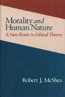

A controversial inquiry into the origins of human values
A controversial inquiry into the origins of human values


 A controversial inquiry into the origins of human values
A controversial inquiry into the origins of human values

|  |
Morality and Human NatureA New Route to Ethical TheoryRobert J. McSheacloth EAN: 978-0-87722-735-9 (ISBN: 0-87722-735-7) |
Plato asked, "How shall a man live?" In this volume, Robert J. McShea offers an important, serious, and controversial answer to that perennial question. In this inquiry into the origins of human values, the author argues that values are based on emotions rather than on reason. The human ability to recall the past, to imagine future consequences of actions, and to be aware simultaneously of present, past, and probable future feelings form the basis of moral judgments. What is truly valuable to humans is a consequence of their species nature; thus, moral theory is the study of that nature. This is what McShea calls the human nature tradition, from "know thyself": to "the noblest study of man is man." Using ethology (studies of animal behavior), the author seeks to remind the reader of the significance of species being to the understanding of all creatures, and thus of ourselves. In viewing moral values as arising from human nature, McShea challenges a number of influential theories-notably, the belief that values are products of culture. Written out of a growing sense that our society finds itself in a moral and social limbo, Morality and Human Nature aurges that we start afresh and calls us to a continual reassessment of mores and social practices in the light of their adaptability to human feeling.
Robert J. McShea is Professor of Political Science, Emeritus, at Boston University.
Political Science and Public Policy
Philosophy and Ethics
© 2015 Temple University. All Rights Reserved. This page: http://www.temple.edu/tempress/titles/761_reg.html.